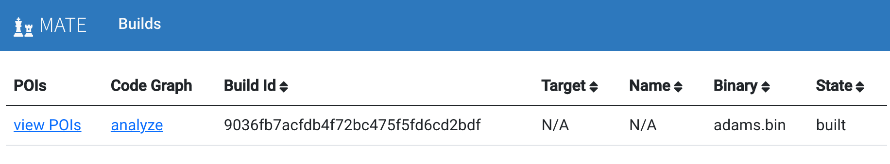

Quick Start¶
This guide is intended to get you started analyzing a program with MATE as soon as possible. For more detail on the various steps taken here, refer to the rest of the documentation.
Dependencies¶
You’ll need:
Docker tools to run the MATE services:
docker-compose
Python tools to use the CLI:
Build and Run MATE¶
Get the source code:
git clone --recurse-submodules https://github.com/GaloisInc/MATE
cd MATE
Build Docker images with the MATE tools (this may take a long time, see Docker Images and Compositions for more information):
docker build --target dev --tag mate-dev .
docker run --rm -v $(pwd):/mate -it mate-dev ./shake.sh -j bdist
docker build --target dist --tag mate-dist .
docker build --target notebook --tag mate-notebook .
docker build --target ui --tag mate-ui .
Important
The bdist build includes a large C++ build that requires at least
8GB of RAM. You may encounter OOM-induced build failures if your development
machine (or Docker environment) doesn’t have sufficient memory.
Alternatively, if increasing the amount of RAM is not feasible, you
may have some luck with reducing the build’s parallelism (e.g. with -j2
instead of -j) or removing -j entirely.
Spin up the MATE services (database, REST API, UI, etc., see Architecture for details):
docker-compose -f docker-compose.yml -f docker-compose.ui.yml -f docker-compose.notebook.yml up
Install the CLI. (Run this from the MATE source root. You can install this into a virtual environment if desired):
pip install -r cli-requirements.txt
Upload a Program¶
You’re now ready to provide a C or C++ program to MATE. The program must:
either be a single standalone C or C++ file, or a Make-based build
compile with Clang(++)
have no external/library dependencies (this restriction can be avoided, but we won’t cover that here)
A good choice might be frontend/test/programs/notes.c from the MATE source
tree.
Use the CLI to upload the program (see mate-cli oneshot for more options):
mate-cli oneshot -p program.c
Navigate to the builds page at http://localhost:3000/builds in your web browser to view the progress in compiling and analyzing your program.
{kind=link}
Wait and refresh the page until the status of the build has changed from “building” or “inserting” to “built”. For small programs, this can be a matter of seconds, for larger programs it can take hours. See Debugging Program Build Failures for troubleshooting tips.
Analyze with MATE¶
MATE provides several tools for exploring and analyzing the program’s code property graph (CPG). See Overview and the respective documentation pages for a more thorough description of each of these tools.
POIs¶
MATE automatically identifies potential vulnerabilities and reports Points of Interest (POIs). Click “view POIs” to see a list of POIs for this program.
See Points of Interest for more details.
Flowfinder¶
Flowfinder is an interactive, graphical user interface for exploring a CPG. You can start Flowfinder from a POI as described above, but you can also start Flowfinder without viewing a particular POI by clicking “analyze in Flowfinder” from the builds page.
See Using Flowfinder and Flowfinder Tutorial for more information.
Notebooks¶
MATE provides a Jupyter Notebook server for creating notebooks that can be used to write custom queries in Python over the CPG. Press the “Open Jupyter Notebook” button to open a Jupyter/IPython notebook to explore the program.
See MATE Python Notebooks for more details.
Under-Constrained Manticore¶
MATE provides a web UI for exploring programs with the Manticore symbolic execution engine in an under-constrained mode. Press the “analyze in Manticore” button to open the Under-Constrained Manticore UI.
See Under-constrained Manticore for more details.
UsageFinder¶
UsageFinder is a tool for finding vulnerabilities that result from incorrect usage of internal or external APIs. UsageFinder can be found at http://localhost:8889/notebooks/examples/usage-finder.ipynb, or by clicking “For Experts”, then “Notebooks” in the top bar of the builds page, then navigating to the “examples/” folder, then the “usage-finder.ipynb” file.
See UsageFinder for more details.